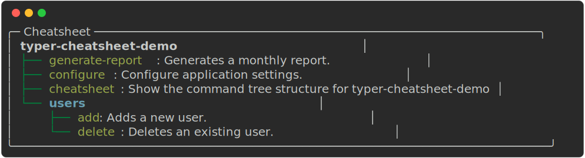

An automatic cheatsheet for your Typer CLI
Typer is an excellent CLI framework from the same author who created FastAPI. It allows you to create robust and intuitive command-line interfaces based on annotations on function arguments.
Without doing anything, it offers autocompletion and command-line help, which also looks very nice as it is based on rich.
It also easily allows you to register command groups and subcommands, which facilitates the organization and maintenance of large applications. But what happens when your application grows, with multiple subcommands, groups, and nested options?
For users (or even for yourself after a while!), it can be a challenge to remember all the available commands, their functions, and how they interact. Integrated help and documentation are key, but wouldn't it be great to have a live "map" of your application, directly accessible from the terminal?
This is where typer-cheatsheet-command comes in!
typer-cheatsheet-command is a small library I wrote that allows you to add a cheatsheet subcommand to your Typer-based program. This command introspects the application and generates a tree-format representation of all your commands and subcommands.
For example, a Typer application called typer-cheatsheet-demo has some commands and subcommands:
import typer app = typer.Typer(name="demo", help="demo") users_app = typer.Typer(help="Manage users in the system.") @users_app.command("add") def add_user(username: str): """Adds a new user.""" print(f"Adding user: {username}") @users_app.command("delete") def delete_user(username: str): """Deletes an existing user.""" print(f"Deleting user: {username}") app.add_typer(users_app, name="users") @app.command() def generate_report(month: str): """ Generates a monthly report. """ print(f"Generating report for {month}...") @app.command() def configure(): """ Configure application settings. """ print("Configuring application...") # Register the cheatsheet command register_cheatsheet_command(app)
Thanks to the last line, when you run your application, the cheatsheet command will be available:
typer-cheatsheet-demo cheatsheet
You will see an output similar to this:

Do you have hidden commands you want to see? Simply add the --show-all option:
By default, the command is registered as cheatsheet. If you want to use a different name for the subcommand, you can explicitly define it:
register_cheatsheet_command(app, command_name="cheat")
How it works
A registration function receives the app and the command name, and then registers the provided command in the application. The function introspects the commands and subcommands registered in the application and generates a tree-format representation, using the Tree widget from rich.
Comments
Comments powered by Disqus